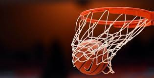
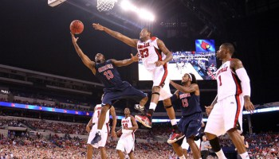

Basketbal
Basketbal is een wedstrijdsport uitgevonden door James Naismith in 1891. Het werd uitgevonden in Springfield in USA. Het is een sport waar je wedstrijden van 5 tegen 5 speelt, maar je hebt ook streetball en dan speel je outdoors 3 tegen 3. Het doel van de sport is zo veel mogelijk in de basket te gooien met een basketbal. Je hebt ook bepaalde regels. Je mag bijvoorbeeld niet tegen een basketbal schoppen met de voet of je mag maar 1 keer dribbelen anders is het een second dribble en is de bal voor de tegenstanders. Het is een sport waarvan je heel veel druk op je lichaam krijgt, maar het kalmeert je ook. Een andere regel is dat je moet dribbelen voordat je een stap met je voet zet anders is het een loopbal. Je hebt ook vrije worpen, dat is 2 worpen of 1 worp als je binnen 2 seconden na de fout een punt maakt. Het houdt in dat je mag werpen met de bal op de basket zonder dat iemand voor je staat, na de tweede worp mag je de bal rebounden en dat houdt in dat je de bal moet proberen te vangen als hij mis gaat. voor de teams van onder 10 en onder 12 heb je 8 periodes van elk 4 minuten, als er 4 periodes voorbij zijn heb je een pauze. en voor teams die ouder zijn heb je 4 kwarten van elk 10 minuten. dus dan heb je pauze na 2 kwarten van 10 minuten.